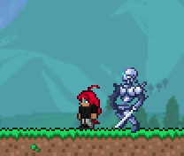
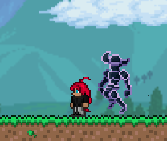
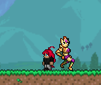
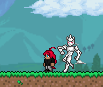
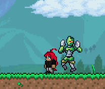
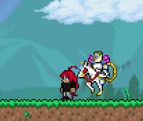
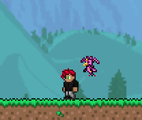
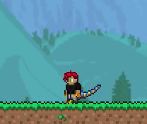
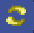

Welcome to the official Jojoria mod wiki! Here you can find all kinds of information about the content. The Stands in this mod are inspired by the Stands from JoJo's Bizarre Adventure. They allow the player to use various abilities depending on the Stand they equip. Each Stand has its own set of abilities and can be upgraded through higher tiers using crafted items as the player progresses. Upgrading a Stand boosts its stats and unlocks new abilities or improves the ones it already has. In this mod, you can enjoy the Terraria experience alongside the characters and powers from the JoJo's series.
This page works as an initial structure: details marked as pending can be completed during the mod's development.
Progression
Pre-Hardmode
When you create a world, Jotaro will appear beside you and give you a "Stand Arrow Shard." After consuming it, you will receive a random Tier 1 Stand.
After defeating the Corruption or Crimson boss, a special meteorite made of "Bizarre Ore" will fall, which can be used to craft Stand Arrows for random Tier 1 Stands and other valuable items.
Hardmode
Upgrade your Stand; there is no special event, LOL.
Stands
The World


Description
Stand damage: 15/35/55/80
5% critical hit chance
No knockback
Left-click to attack
Abilities
1) Stops time for 2/5/7/9 seconds.
2) Throws 3 volleys of knives.
3) Teleports you to the mouse position.
Acquisition
Burning Will: 10
Gold/Platinum Bar: 10
Gold/Platinum Watch: 1
Silver Chariot

Description
Stand damage: 5/10/20/30
5% critical hit chance
No knockback
Left-click to attack
Abilities
1) Fires the rapier at high speed, piercing enemies.
2) Takes a defensive stance and destroys any enemy projectiles that approach.
3) Creates 7 fast Silver Chariot illusions (you cannot use the previous abilities).
Acquisition
Will: 10
Silver/Tungsten Bar: 15
Silver/Tungsten Shortsword: 1
Star Platinum

Description
Stand damage: 15/40/60/90
5% critical hit chance
No knockback
Left-click to attack
Abilities
1) Extends Star Platinum's finger to increase range.
2) Increases damage by 50% for 14 seconds.
3) Stops time for 3/5 seconds.
Acquisition
Will: 10
Platinum bar / Gold bar: 10
Fallen Star: 10
Hierophant Green

Description
Stand damage: 8/16/23/30
5% critical hit chance
No knockback
Left-click to attack
Abilities
Grappling hook key, only while no hook is equipped.
1) Fires several chains at an enemy, immobilizing it and allowing you to drag it.
2) Sprays bouncing emeralds around you.
3) Creates an area of emerald threads that damage enemies on contact.
Acquisition
Will: 10
Emerald: 10
Jungle Spores: 10
Anubis

Description
Stand damage: 5/10/20/30
5% critical hit chance
No knockback
Left-click to attack
Abilities
1) Anubis Remembers (Passive).
Each hostile enemy defeated increases your damage semi-permanently.
Enemies: +0.2% damage
< 200 HP: +0.4% damage
< 500 HP: +0.6% damage
Bosses: +1.4% damage
Your progress is lost when you die or unequip the Stand.
Acquisition
Evil Will: 10
Bizarre Bar: 8
Antlion Mandible: 5
Magician's Red

Description
Stand damage: 20/35/45/55
5% critical hit chance
No knockback
Left-click to attack
Right-click to breathe fire
Abilities
1) Creates an area of Ankh crosses around the user, which shoot outward when finished.
2) Creates a powerful hurricane of flames that deals heavy damage.
Acquisition
Burning Will: 10
Fireblossom: 10
Lava bucket: 1
Justice

Description
5% critical hit chance
No knockback
Passive: Enemies damaged within the area of effect become puppets until they die or you unequip the Stand.
Abilities
1) Right-click to set the enemy your puppets will attack.
2) Heals your puppets in a certain area.
3) Pulls your puppets toward the player.
Acquisition
Evil Will: 10
Bones: 20
Any tombstone: 3
Gold Crown: 1
Killer Queen

Description
Stand damage: 7/15/30/50
9%/14%/19% critical hit chance
No knockback
Left-click to attack
Right-click to place a bomb
Abilities
1) Summons Sheer Heart Attack for 15 seconds.
2) Throws a bubble that explodes on impact or can be detonated manually with the same key.
3) Places a smaller copy of Killer Queen on an entity. The ability activates when you are about to die, automatically restoring your previous health. You can also activate it manually; both you and the entities return to previous positions and explosions occur for 13 seconds.
Acquisition
Evil Will: 10
Bombs: 15
Platinum/Gold Crown: 1
Crazy Diamond

Description
Stand damage: 15/30/50/80
5% critical hit chance
No knockback
Left-click to attack
Abilities
1) Hit an enemy long enough to fuse it with stone and apply a x4/x5/x6 damage multiplier.
(Passive) Allows you to heal other players.
(Passive) Hitting an object on the ground restores it to its original crafting materials.
2) Forms a stone shield around the user.
Acquisition
Will: 10
Diamonds: 5
Life Crystal: 1
Cinderella

Description
Stand damage: 5/15/30/50
5% critical hit chance
No knockback
Left-click to attack
Right-click: restores mana and health in a certain area; affects other players too.
Passive: applies the negative effect "Disfigurement" to hit enemies.
Abilities
1) Lets you change several aspects of the player.
2) Changes the player's appearance and disorients enemies with the "Disfigurement" effect.
Acquisition
Will: 10
Jungle Rose: 1
Golden Experience

Description
Stand damage: 15/25/45/70
5% critical hit chance
No knockback
Left-click to attack
Right-click to heal
Abilities
1) Speeds up vegetation growth to damage enemies.
2) Summons a frog that deals contact damage and reflects part of the damage received.
3) Summons a swarm of butterflies that deal contact damage and reflect part of the damage received.
Acquisition
Will: 10
Wood: 50
Pumpkin Seeds: 10
King Crimson


Description
Stand damage: 15/30/50/75
5% critical hit chance
No knockback
Left-click to attack
Right-click (Donut) Powerful strike that pierces the enemy
Abilities
1) Predicts the possible position of enemies and grants the user i guaranteed dodge.
2) The user becomes intangible, while entities move freely, leaving shadows in their wake.When the ability ends or is canceled,
the entities return to their starting point, retracing the path they once took.Once Time Erasure ends, Donut will gain "x damage" for 1 second.
3) Teleports, confusing nearby creatures.
Acquisition
Evil Will: 10
Rotten Chunk/Vertebra: 15
silver Chariot Requiem

Description
Stand damage: 70
5% critical hit chance
No knockback
Left-click to attack
Passive: Every 20 seconds, applies Chariot Requiem´s debuffs to all nearby creature.
Abilities
1) Causes all entities in an area to fall into a deep sleep.They can wakw up when taking damage.
2) Applies continuous debuffs over a considerable area, including; Slows the enemy by 50%, reduces defense by 50%, mutated bleeding.
3) Any attack directed at Chariot Requiem is automatically reflected back onto the attacker.
Acquisition
Consume the Requiem Arrow while having Silver Chariot (Tier 3 or 4) equipped.
Golden Experience Requiem (GER WIP)

Description
Stand damage: 30
5% critical hit chance
No knockback
Left-click to attack
It´s not finished yet, so.. maybe abilities 1 and 3 work, but with some bugs.
Acquisition
Consume the Requiem Arrow while having Golden Experience (Tier 3 or 4) equipped.
Weather Report

Description
Stand damage: 5/10/15/25
5% critical hit chance
No knockback
Left-click to attack
Right-Click summons 2/3/4/5 clouds that shoot powerful drops of water.
Abilities
1) A powerful gust of wind that can drag some enemies along.
2) Causes a rain of frogs that are highly poisonous on contac.
3) If the enemy is at 40% health, it will die automatically and turn into a snail.(for bosses, it´s 5%).
Acquisition
Will: 10
Cloud: 152
White Snake

Description
Stand damage: 5/15/25/40
5% critical hit chance
No knockback
Left-click to attack
Right-Click Places the Stand on the enemy, and after a short time it will lose the ability to move and attack.Regular enemies will be disabled for 20 seconds and bosses for 6 seconds.
Abilities
1) Produces a liquid thaht sticks to surfaces, causing continuous damage and a slowdown.(The slowdown increases with Tiers)
2) Enters a mode in which it fires a weapon.(This weapon scales with both Ranger damage and Stand damage)
Acquisition
Evil Will: 10
bone: 20
C-Moon

Description
Stand damage: 20/35/50
5% critical hit chance
No knockback
Left-click to attack
W key: Permanently maintains the inverted gravity buff
Abilities
1) Lifts enemies up and then slams them against the ground.
2) Emits a shockwave that pushes anemies away.
3) Nullifies the gravity of enemies in a large area.
Acquisition
Use the Green Baby when you have White Snake (Tier 3 or 4) equipped.
Made in Havean

Description
Stand damage: 80
5% critical hit chance
No knockback
Left-click to attack
Right-Click use 1
Abilities
1) Acelerates rapidly, piercing and hurting everything in its path.
2) Forms an area in which it starts moving at great speed, quickly piercing multiple enemies.
3) The faster time passes, the more the cooldown of the "1" ability is reduced.
Acquisition
Use the Mysterious Diary in Space while having C-Moon (Level 3) equipped.
Tusk

Description
Stand damage: 17
5% critical hit chance
No knockback
Abilities
1) Right-Click: fires a nail at high speed.
2) Hold Right-Click: fires a stronger nail that pierces enemies.
3) Left Click: fires your entire magazine in inaccurate bursts.
Acquisition
Will: 10
Desert Fossil: 20
Fallen Star: 5
Scary Monsters

Description
Stand damage: 30
5% critical hit chance
No knockback
Left-click to attack
(Passive)Scratches inflict the Dino Virus infection. After a few seconds, the enemy will turn into
a dinosaur that serves you and spreads the infection. The transformed dinosaurs deal Stand-class damage,
and their health is calculated by adding 60/120/160/210 to the transformed enemy's health.
(Passive)Your transformed body allows you to increase your damage and gain more speed.
Abilities
1) Summon dinosaurs that will protect you and deal Stand-class damage.
2) You will transform completely and gain increased attack range. Additionally, if you use Skill 1, you will summon an extra dinosaur.
Acquisition
Evil Will: 10
Desert Fossil: 20
Bone: 10
Sandstone Block: 20
Items
Pre-Hardmode
(Tier 1 Wills)

Evil Will (dropped by Corruption or Crimson enemies)
Burning Will (dropped by Underworld creatures)
Hardmode
Upgrade your Stand; there is no special event, LOL.
Information to be added
This page can be expanded with abilities, stats, acquisition methods, usage tips, and final images as they become available.
- Biomes and locations — section to be developed.
- Bosses and enemies — section to be developed.
- Items and equipment — section to be developed.